Java Web Start
The goal is to now drive all installations and runs of Audiveris through Java Web Start. [Some information on former approaches is still available in the Development section]
Instead of multiple installation files, there is now just a single JNLP file available on Audiveris home page to deploy and run the application on different OS'es such as Windows, Linux or Mac, using either 32-bit or 64-bit architectures.
Applications launched with Java Web Start are cached locally and can be automatically checked for updates. An Internet connection is really mandatory only for the very first launch. An already-downloaded application is launched on par with a traditionally installed application, especially as Audiveris shortcuts are installed (through a desktop icon and through a program menu item).
NOTA: As of this writing, this Java Web Start approach works for the Oracle Java environment only, whether on Windows or Ubuntu. Mac is still to go and on Ubuntu, IcedTea Java needs further debugging.
To check or modify which Java Web Start tool is used by default on Ubuntu, use the command:
sudo update-alternatives --config javaws
First launch
To launch Audiveris the very first time, you have several possibilities, regardless of your operating system:
- Either click on the button located in the upper right corner of this page, or the same button found on Audiveris home page. To be actually visible, this button requires that JavaScript be enabled in your browser. When clicked, it will ensure that an appropriate Java Runtime Environment is installed and then launch the JNLP application.
- Or click on the following hypertext link to Launch the application. This link appears even if JavaScript is not enabled. However, it assumes that your browser and Java environments are properly configured to handle the linked JNLP file.
- Or finally from a terminal directly use the command:
javaws https://audiveris.kenai.com/jnlp/launch.jnlp
(Nota: mind the 's' in https. Otherwise you may get errors like "illegal URL redirect")
All methods will trigger the download and processing by
javaws (the Java Web Start launcher which
is part of Java runtime) of a
small XML file named launch.jnlp.
Such JNLP file describes the whole download and launch
process.
The main visible steps are described here after in
sequence (most pictures are taken from the Windows
environment, their Ubuntu equivalent are very similar):
The local Java runtime downloads the JNLP file and related resources.
The JNLP file describes a set or requirements, including the Java environment. If needed, a more recent Java runtime may get downloaded automatically.
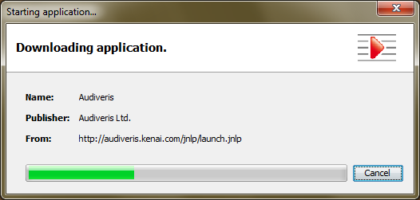
The initial components for Audiveris application are downloaded as needed and cached locally.
The download applies for the first launch only, after that they are taken directly from the local Java cache.
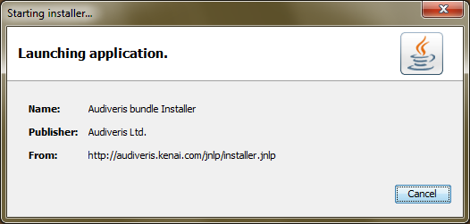
Since this is the first launch, an extension component named the "Audiveris bundle Installer" is called to install the whole bundle of needed software companions.
Compare with the previous window, and notice the name
(Audiveris bundle Installer) as well as
the JNLP file (installer.jnlp).
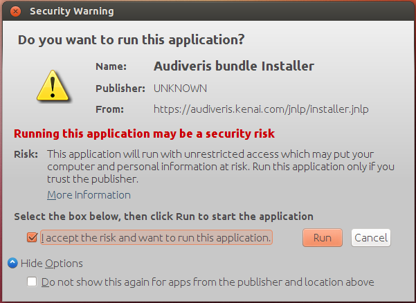
You may get a security warning like this one because Audiveris will need to escape the default sandbox and access local disk.
You can safely accept this and even check the option for not showing this warning again.
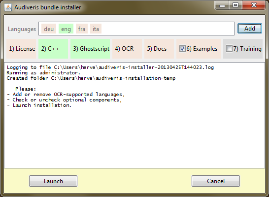
This is the installer User Interface:
- The top row allows to select which languages should be supported by the embedded OCR.
- The second row presents the sequence of companions to install. Some are optional (Examples, Plugins, Training data) and can be selected through a check box.
- The middle area is meant for display of main messages.
- The footer provides buttons to launch or cancel the installation.
Note that you cannot change the folder where Audiveris application data is installed. This feature may be provided in a future version.
An item color depends on item current status:
- pink for an item that is needed (mandatory or selected optional) but not yet installed,
- green for an installed needed item,
- gray for an optional item not selected,
- orange for an item being processed,
- red for an item which failed to install.
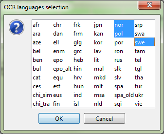
Using the Add button from
the language row, you can select languages on top of the
predefined ones
(deu, eng, fra,
ita).
You can remove a language as well, even from the predefined ones, via a right-click on the proper item in the language row. But make sure you don't install OCR with no language at all otherwise it will fail at runtime.
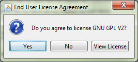
Right after clicking Install,
you are prompted for agreement with Audiveris license.
Click View License to open
a browser on precise license content.
Select Yes if you
accept license terms and want to continue installation.
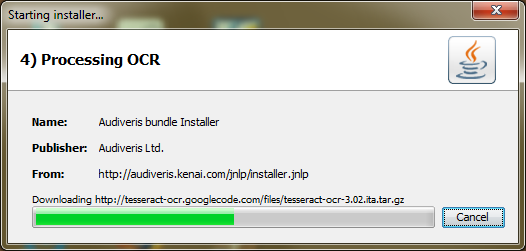
Each companion is processed in sequence, as displayed by the current heading and the global progress bar.
If some external resource is downloaded, the status text, right above the global progress bar, displays the name of the remote URL being downloaded.
Note the progress bar indicates the global progress (in terms of companions) rather than the current download progress (in terms of bytes downloaded). So be patient, let the download proceed.
Depending on your environment, the installation of
software companions may require a write-access to
system locations
such as c:\Program Files folder under
Windows, and similar locations for other OS'es.
By default a standard user is not allowed to write to
these locations, so you may be prompted for "elevation"
to Administrator level to complete the installation.
On Windows you will see this typical UAC (User Account Control) dialog that recent Windows versions use to prompt for user agreement.
Click Yes to proceed and
let the installer run.
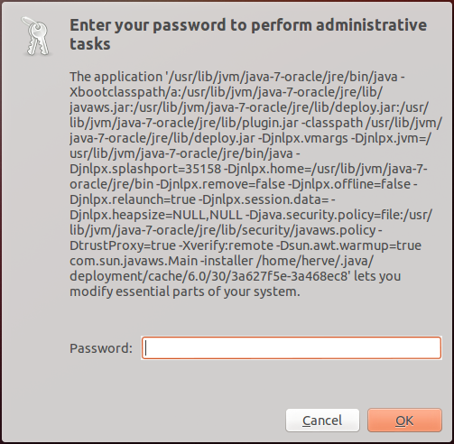
On Ubuntu, you will see a gksudo
or a kdesudo prompt for your password in
order to perform the final administrative task.
Enter your password and proceed.
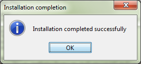
At the end, this message notifies a successful completion. You can now safely exit the installer so that Audiveris application can proceed.
If one or several companions failed to install, you will get instead an installation global failure message (on top of the dialog(s) describing each failure context).
Note that all details of installation, whether
successful or not, are kept in a dedicated log file named
audiveris-installation-<TIMESTAMP>.log
and located in your temporary directory.
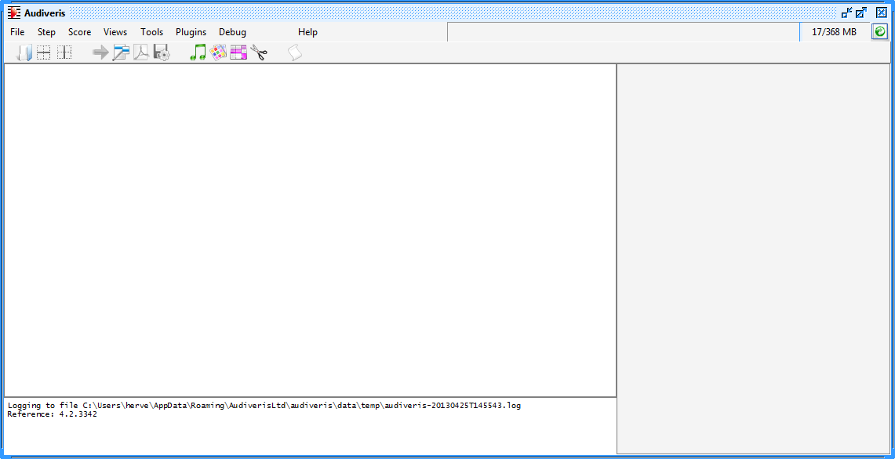
This is the end. If installation succeeded you can now see the main Audiveris application window.
Next launches
For the next launches, you can still use either the Launch button or the plain link on Audiveris home page, or the command line in a terminal window.
Since the application is now "installed", you can use the shortcuts as well:
- The desktop icon: 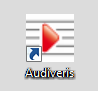
- The Audiveris menu item in Windows start menu.
Data is now kept in Java cache. Hence, whatever the way you launch Audiveris JNLP file, all sequences are now very short:
- The initial window "Java 7..." or similar appears for a couple of seconds,
- The final Audiveris application window follows immediately.
32-bit vs 64-bit: "Tesseract OCR is not installed properly"
A 32-bit OS can run only 32-bit programs, but a 64-bit
OS can usually run both 32-bit and 64-bit programs.
This applies to the javaws program as well,
and typically you can have different Java environments
installed on your OS.
Java byte-code is OS and architecture independent, but
Audiveris needs Tesseract OCR software, a C++ program,
accessed through JNI in the same process.
The related binary files are installed by Audiveris
installer into proper (Windows) system folders:
a 32-bit javaws will target 32-bit system
folders while a 64-bit javaws will target
64-bit system folders.
If, on following launches, you observe messages like "Error while loading library jniTessBridge" (in the log window) or "Tesseract OCR is not installed properly" (in a popup), they signal an architecture mismatch: you are trying to load 64-bit binaries from a 32-bit javaws/JVM or vice versa. Typically, for some unknown reason, the shortcut installed by JNLP may point to a 32-bit version of Java, this has been observed on Windows when both 32-bit and 64-bit Java environments are installed.
To fix this, you can modify the shortcut as follows.
Use a right-click on the icon, to select Properties then
Shortcut. The "target" field points to a javaws.exe
program.
If the field begins with
C:\Windows\SysWOW64\javaws.exe then it is
pointing to 32-bit Java.
So modify it so that it points to 64-bit Java, using
either javaws.exe alone if the 64-bit Java
appears first in the path, or an explicit link such as
C:\Program Files\Java\jre7\bin\javaws.exe.
Better yet, you can even have both 32-bit and 64-bit versions of Audiveris active at the same time, each with its own set of binaries in proper system folders. To do so, you have to install each version, for example (assuming you have uninstalled any previous version):
(32-bit)\javaws https://audiveris.kenai.com/jnlp/launch.jnlpjavaws -uninstall https://audiveris.kenai.com/jnlp/launch.jnlp(64-bit)\javaws https://audiveris.kenai.com/jnlp/launch.jnlp
The purpose of step #2 (uninstall) is to remove Audiveris from Java cache so that the next call to javaws (step #3) will actually trigger the download of the needed binaries from Audiveris web site. From that point on, you can use either 32-bit javaws or 64-bit javaws (or whatever launch mechanism you choose) and it will launch the corresponding version immediately since both binary sets are available, while Audiveris byte-code is in Java cache.
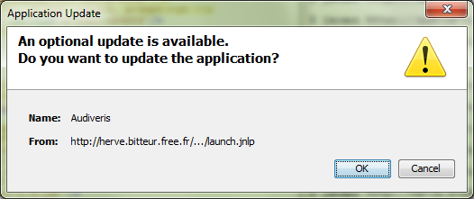Application updates:
New versions of Audiveris resources may become available on the server. Every time you launch Audiveris, a quick network access is performed to check if there are new versions of resources. If so, you will be prompted for updating the application if you wish.
Note that due to time-zone differences between server and client, this might result in a delay of up to 24 hours between when a new Jar is uploaded, and when it is recognized as new content to be updated.
Java cache
So, where has Audiveris application gone? In the global Java cache. And you can monitor this Java cache, from the Java Control Panel.
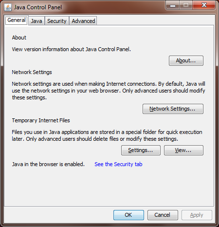To display the Java Control Panel:
- On Windows, use the Control Panel and select Java.
-
On Ubuntu, use the terminal command:
ControlPanel.
From this panel:
Settings... allows to
manage the cache globally and especially through
Delete Files... to clear
everything and restart from a fresh cache.
View... allows to manage
each cached application individually.
More directly, from a terminal in Windows or Ubuntu,
the command line:
javaws -viewer
opens both the Java Control Panel and its applications
viewer.
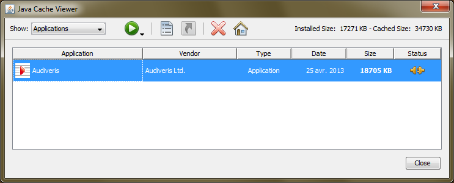
This view displays all installed cached Java applications.
Select the Audiveris application, and use either the icons in the tool bar or a right-click for context menu, to:
- Run the application, either online (connected to the web) or offline (with no web connection).
- Display the application JNLP file.
- Install shortcuts if not done yet.
- Uninstall the application.
- Display the application web page.
Uninstallation
To uninstall Audiveris, you can:
- Either use the cache view as shown above, and select the uninstallation action,
- Or, in a terminal window, use the command line:
javaws -uninstall https://audiveris.kenai.com/jnlp/launch.jnlp
[note the-uninstalloption]
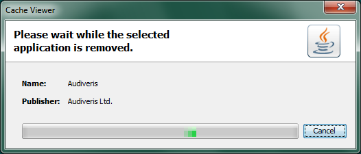
This is the window which tells from the Cache Viewer that the application is being removed.
You then get the Audiveris bundle Installer window, this time running for uninstallation. For the time being, the "uninstaller" is just a stub, meaning the software companions are not actually uninstalled and you get the following message almost immediately:
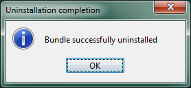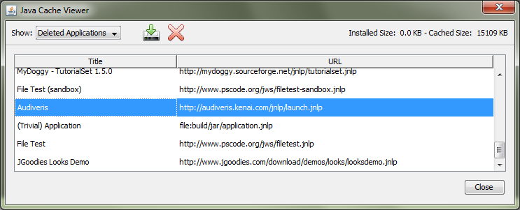
Looking at the Cache Viewer, you can see that Audiveris
no longer appears in the Applications
section.
But selecting the Deleted Applications
section, you can see that Audiveris is listed among
the deleted applications.
From there, using tool bar icons or right-click, you
can:
- Either re-install the application. This will run quickly since most data parts are still in the cache.
- Or, actually remove application data from the cache. From that point on, any reinstall will imply a new download.


 .
.


{kind=link}